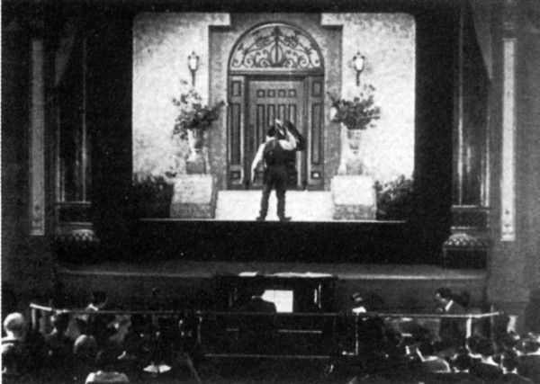

-
Introduction to Idiom Film
by Tom McCormack October 17, 2011

Film criticism’s in trouble; it always has been.The major papers continue to churn out weekly reviews that seem entirely coextensive with the Hollywood publicity machine. “There is a movie opening,” they say, “it stars so-and-so. It is.” On the occasion that a critic does take a definite stand, the review rarely rises to analysis but expresses only exasperation. The critic is at the end of his or her rope, but without an explanation.
The Internet, meanwhile, has opened up a huge canvas for young critics, many of them perversely dedicated to aping the mistakes of their elders. Rotten Tomatoes lists 57 reviews of Apollo 18, 46 of Shark Night 3D, and a whopping 126 reviews of the remake of Conan the Barbarian. In these, we get bracing arguments, like that the movie “really delivers a fun, tense experience” or it’s “dull, but diverting” or it “isn’t crummy, exactly, just blah.” How many times do we need plot synopsis followed by critical mad libs? Who can blame the charlatans and Wikipedia Bolsheviks when they say professional criticism as such is outmoded and inherently elitist? Why should anyone grant authority to a profession that isn’t crummy, exactly, just blah?
The movie review has always been a mutt: part art, part copy. It arose in response to specific economic demands: information was scarce and consumers wanted to be guided. Since most could only afford to subscribe to one or two papers, whole generations of freelance intellectuals found steady work. Some were hacks, others workmanlike, and others still — like Otis Ferguson, James Agee, Manny Farber — were brilliant. They gave us language for a novel art form; they modeled how one might engage with mass culture without becoming a victim of its outrages. Mass culture responded, in turn, by becoming all outrages.
Now the hive-mind of Internet has all but erased the economic demand for film criticism, marooning a generation of young writers on an island of obsolescence, thumbs pointing skyward or down toward the earth.
We at the Idiom film and electronic art section, we’ll do long form. We’ll do avant-garde and the art-house and the gallery. We have nothing against Hollywood in principal, we just end up disappointed with every Hollywood movie we see, taken on its own terms. It’s enough to make you wonder if there is some systemic problem.
We’re also going to need to talk about YouTube; at a time when cinema is furiously metastasizing, many writers seem set on letting new developments happen in a critical vacuum. Uniquely positioned to think seriously about the unprecedented omnipresence of moving images, young critics would rather let us know that the new Michael Bay film is “worth seeing” but “not his best.”
While popular criticism struggles to find its bearings, academia keeps on producing mountains of belabored prose for the sake of sustaining the small but diverse group of important thinkers still doing important work. We hope to highlight some of those thinkers, and perhaps serve as some kind of go-between for the academy and journalism.
We’d like to get polemical. We want to get argumentative. Film criticism has become toothless. Everyone mourns the passing of the great Kael-Sarris feud of the 70s, but when it comes time to disagree they remain silent.
We hope you’re sympathetic or livid or anywhere in between. We eagerly encourage submissions (although we can’t always guarantee a speedy reply).
To inaugurate our launch we have Michael Joshua Rowin on Optics Antics: The Cinema of Ken Jacobs, a new collection of essays edited by Paul Arthur, David E. James, and Michele Pierson; Colin Beckett on the cinema of British avant-gardist John Smith; Jonathon Kyle Sturgeon with a revisionist take on Rossellini’s Rome, Open City; and Courtney Fiske on Over Your Cities Grass Will Grow, the new documentary about German artist Anselm Kiefer.